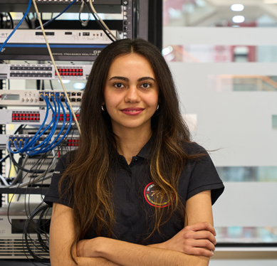
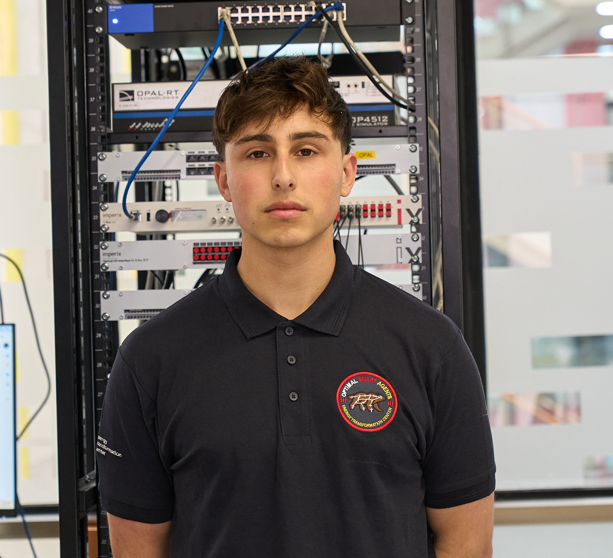

Research group
People behind
Our group brings together students and collaborators interested in control, microgrids, smart grids, and cyber-physical energy systems. Students play a central role in developing our ideas, experiments, and open tools.
On this page
Home
Students
Collaborators & visitors
Alumni
Gallery
Current members
Students 09 members
Ph.D. student
Distributed control and Ph.D. student
Energy management for 
Student
Hydrogen systems and Photo Student
Research area Photo Student
Research area Photo Student
Research area Photo Student
Research area 
Student
Agrivoltaic grids and Student
Agrivoltaic grids and
Research network
Collaborators & visitors Research stays and joint work
01 Collaborator name Institution · Research topic
↗ 02 Visitor name Institution · Research visit
↗
Former members
Alumni Where they went next
Former student Fondecyt Iniciación project
Research alumnus
↗ Former student Fondecyt Iniciación project
Research alumnus
↗
Group archive
Team moments, Browse the photo gallery →